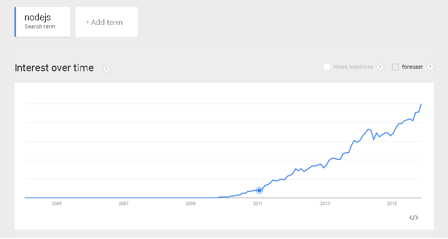

Jean-Denis Caron
jean-denis.caron@frimastudio.com
facebook.com/jeandenis
Concepts
Contrôle de l'affichage des fenêtres / menus.
Isolation de l'environnement: cookies, window.localStorage, dossier de l'application (AppData/.folder).
Accès aux ressources du système (IO, Networking, Run, API).
Expliquation simplifié
Node.js qui rencontre Chrome personnalisable / emballable.
Histoire récente
Mozilla Prism / Chromeless (2007)
Node.js (2009)
2011, RIP Mozilla Prism

Avantages
Rapidité de développement pour ceux qui sont familimiers avec JavaScript et HTML/CSS.
Compatibilité avec les modules Node.js et toutes les librairies JavaScript.
Avantages
Multiplateforme; Chromium/Electron est rapide et robuste sur ces 3 plateformes: Mac OS, Linux, Windows.
Intégration facile et sécuritaire de contenu externe via l'élément <webview>.
Possibilitées
Compiler des modules natifs avec emscripten, mais aussi possible d'inclure des modules compilés et spécifiques à chaques plateformes.
Application portable sans trop de réingénérie vers PhoneGap / Cordova.
Similaire à
Node WebKit / NW.js, mais différent au niveau de la gestion des fenêtres et de l'intégration avec Node.js.
Applications Electron
Atom
Slack
Visual Studio Code
Applications NW.js
Intel XDK
Popcorn Time
WhatsApp
Futur?
Chrome OS
Mozilla browser.html